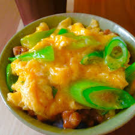

Rice Mess
Ground beef with rice in a tomato sauce.

Ingredients
- 2 cups water
- 1 cup uncooked rice
- 1 tablespoon butter
- 1 small onion, chopped
- 1 clove garlic, minced
- 1 pound ground beef
- 1 (8 ounce) can sliced mushrooms, drained
- salt and ground black pepper to taste
- 1 (15 ounce) can tomato sauce
- 4 slices Cheddar cheese
Steps
- In a saucepan bring water to a boil. Add rice and stir. Reduce heat, cover and simmer for 20 minutes.
- Heat butter in a skillet over medium heat. Saute onion and garlic until tender. Remove from skillet, and set aside. In the same pan, brown the ground beef until no pink shows; drain excess fat. Return the onion mixture to pan, and stir in mushrooms. Season with salt and pepper. Stir in cooked rice and tomato sauce. Top with sliced cheese, and allow to stand until cheese is melted.